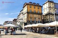
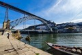

Multimedia
Fotografias
 Poema
"Porto,
meu desconhecido e familiar,
meu modo de sentir e de pensar,
nunca te vi, que te vi sempre.
Vivi nos teus rumores,
criança no teu sono.
Eras como o mundo ao nascer
e não eras senão o que de mim sonhava.
Com a tua pele de pedra,
tuas muralhas
de tristeza e granito,
teu céu cortado em estrelas,
porto de noite e luz."